03 Fet & Mosfet
Junction Field Effect Transistor (JFET):
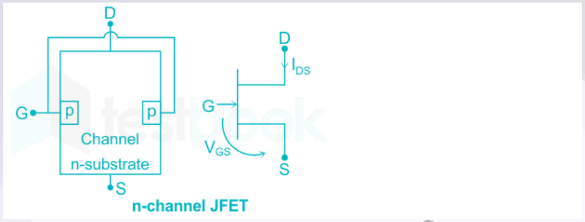
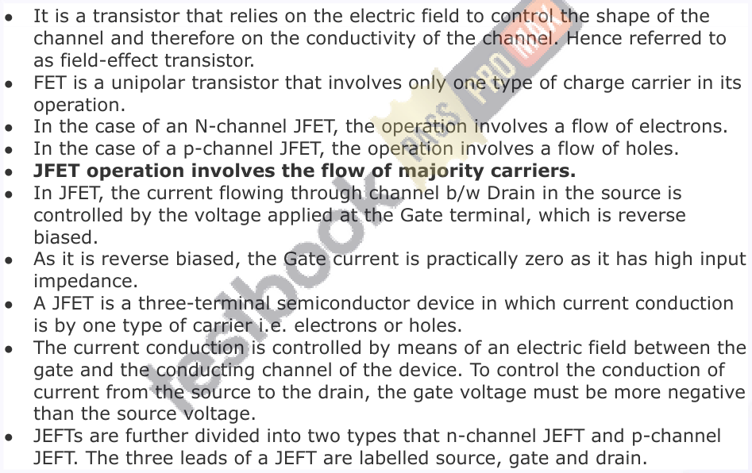
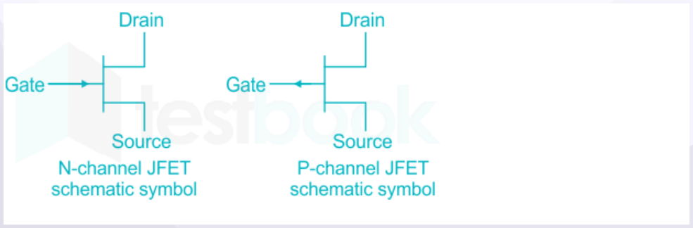
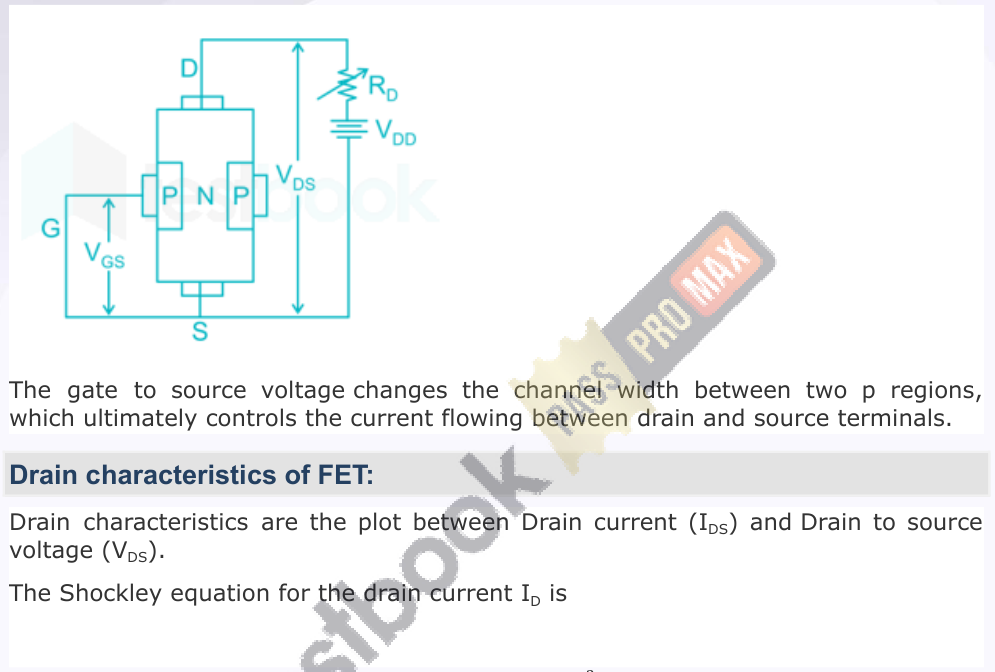
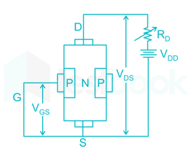
2 () 𝑉 𝐺𝑆 𝐼 𝐷 = 𝐼 𝐷𝑆𝑆 1 − 𝑉 𝑝
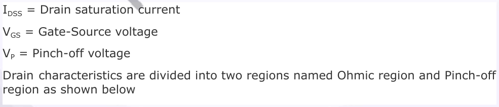
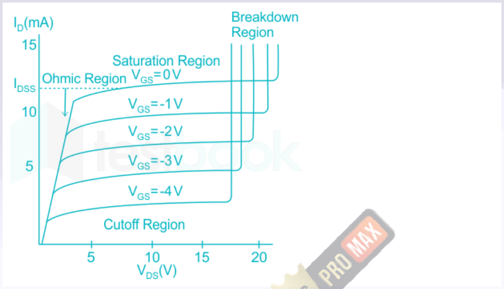
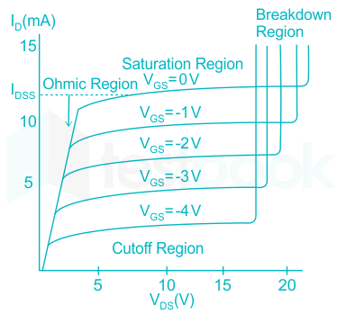
Pinch-off region:
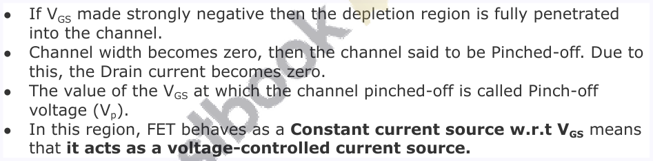
Pinch off voltage:
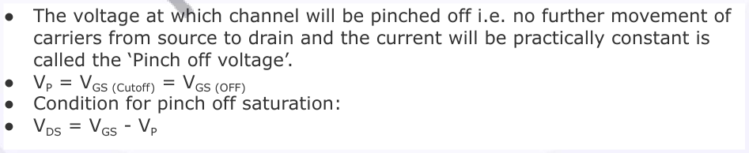
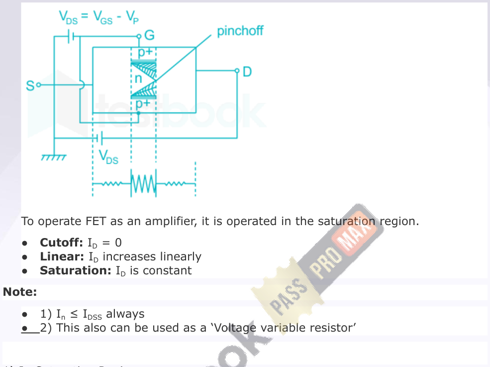
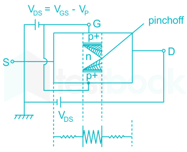
| ● 1) I ≤ I always n DSS | ||
|---|---|---|
| ● | 2) This also can be used as a ‘Voltage variable resistor’ |
2 () 𝑉 𝐺𝑆 𝐼 𝐷𝑆 = 𝐼 𝐷𝑆𝑆 1 − 𝑉 𝑃
Where I DSS = Saturation current at V GS = 0 V P = pinch-off voltage I DS = Saturation current at any V GS
- 2) μ = r d g m Where μ = amplification factor r d = Drain Resistance g m = Trans conductance −2 𝐼 𝐷𝑆𝑆 𝑉 𝐺𝑆
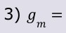
⎡⎢⎣ ⎤⎥⎦ 1 − 𝑉 𝑃 𝑉 𝑃
Or
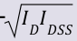
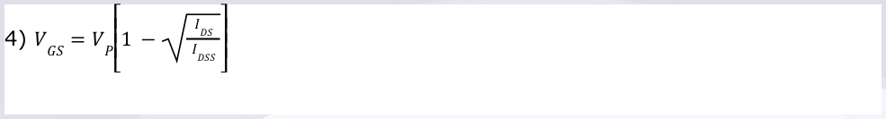

- 1. Enhancement MOSFET:
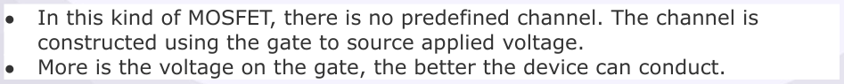
- 2. Depletion mode MOSFET:
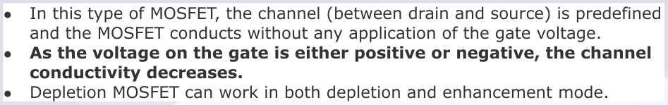
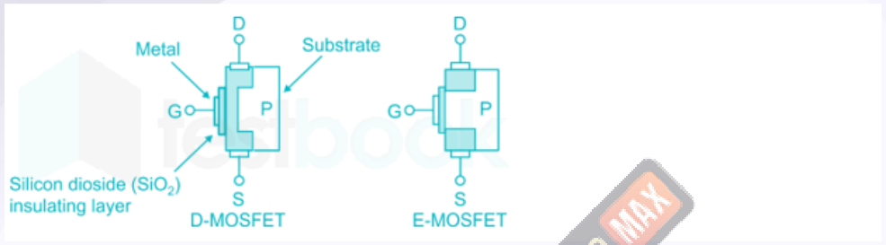
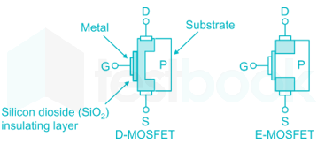
Symbol representation of MOSFET:
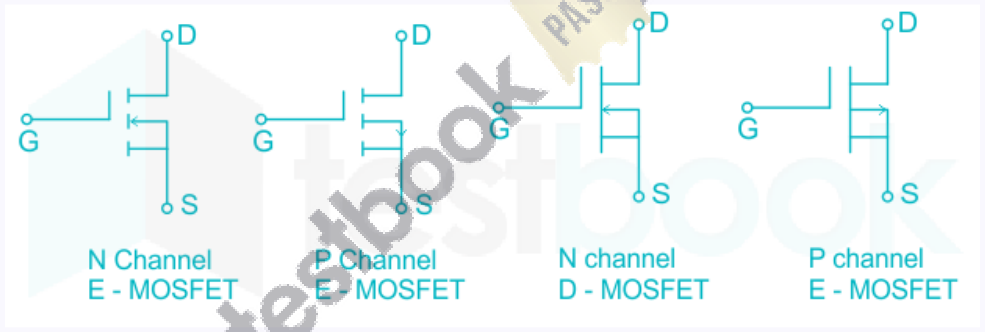
N-channel E MOSFET:
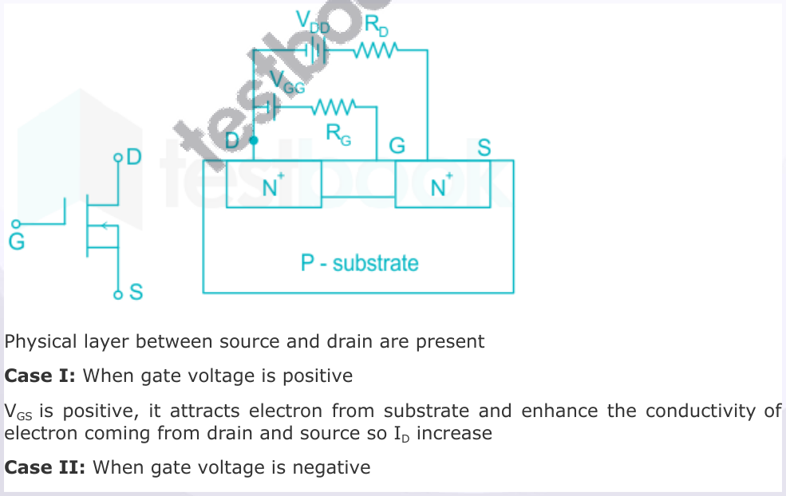
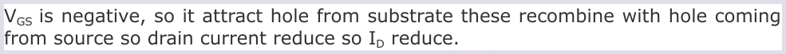
Transfer characteristics of an n-channel depletion MOSFET is as shown:
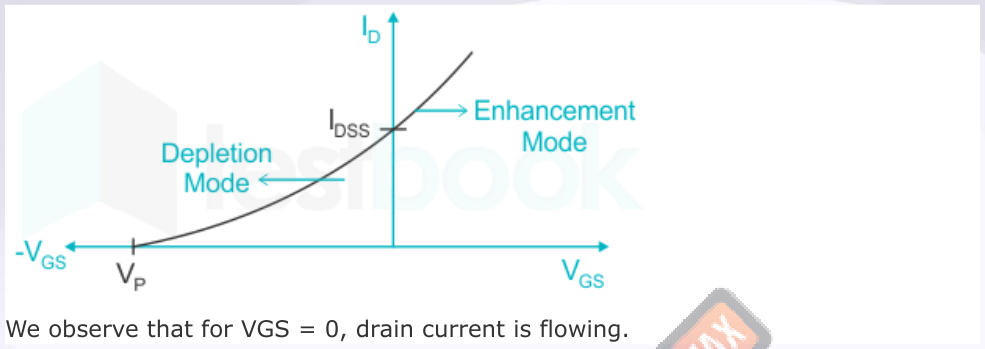

Transfer characteristics of p-channel depletion MOSFET is as shown:
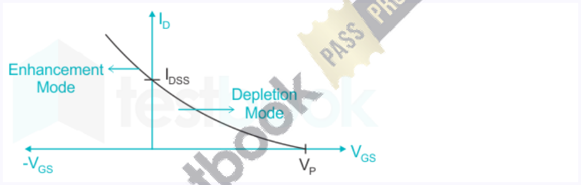
Transfer characteristics of n-channel Enhancement MOSFET is as shown:
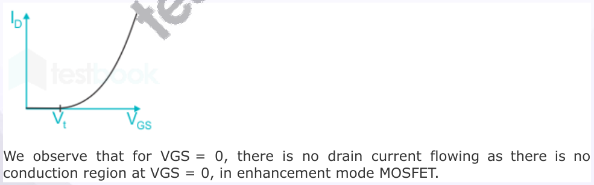
Transfer characteristics of p-channel Enhancement MOSFET is as shown:
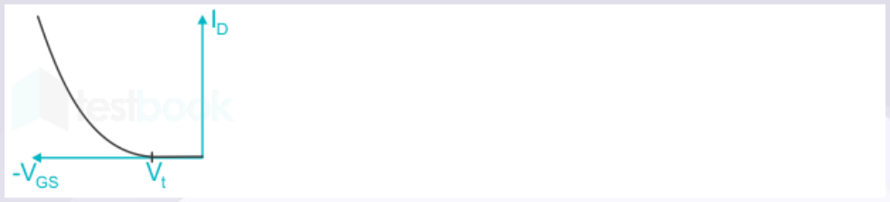
N channel MOSFET
- 1) If V DS ≥(V GS V T) → saturation Region µ 𝑛 𝐶 𝑜𝑥 𝑊 2 () 𝐼 𝐷 = 1, V T = Threshold voltage of N-MOS 𝑉 𝐺𝑆 −𝑉 𝑇 2 𝐿
- 2) If V DS < V GS V T → linear Region 2 µ 𝑛 𝐶 𝑜𝑥 𝑊 𝑉 𝐷𝑆 () 𝑉 𝐷𝑆 −
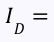
(𝑉 𝐺𝑆 −𝑉 𝑇 2] 𝐿
- 3) If V GS > V T → MOSFET is ON V GS < V T → MOSFET is OFF
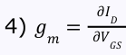
P Channel MOSFET
- 1) If V SG > |V T | → MOSFET is ON V SG < |V T | → MOSFET is OFF V T = Threshold voltage of P-MOS
- 2) If V SD ≥(V SG + V T) → Saturation Region µ 𝑛 𝐶 𝑜𝑥 𝑊
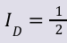
2 () 𝑉 𝐺𝑆 + 𝑉 𝑇 𝐿
- 3) If V SD < V SG + V T → Linear Region µ 𝑛 𝐶 𝑜𝑥 𝑊 () 2 () 𝑉 𝑆𝐷 − 1
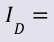
𝑉 𝑆𝐺 + 𝑉 𝑇 2 𝑉 𝑆𝐷 𝐿
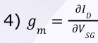